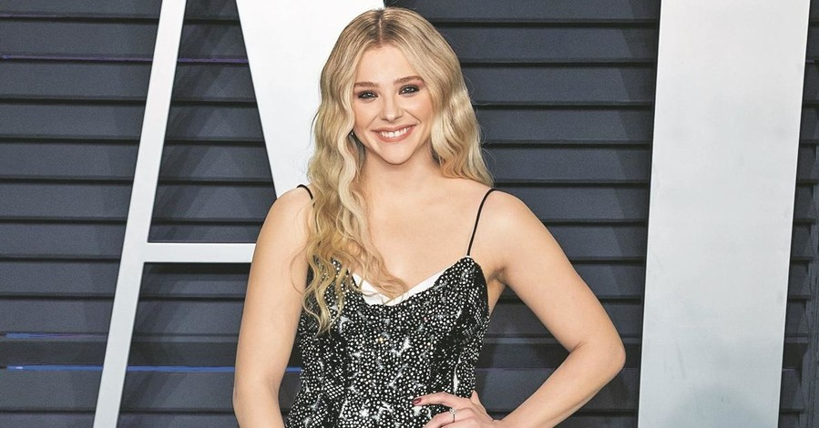

Ця голлівудська зірка з кожним роком стає все популярнішим. Болокурая і мила Хлоя Грейс Морец вже знялася більш чим в 50 фільмах, причому в багатьох зіграла головні ролі. Талановита актриса і успішна модель – все це поєднується в тендітній 19-річної Хлое. За роки творчості дівчина встигла отримати кілька нагород і знялася з такими акторами, як Джуліанна Мур, Кіра Найтлі і Джонні Депп.
Хлоя Грейс Морец народилася 10 лютого 1997 року Атланті. Батько акторки Маккой Моріц – хірург, а мати Тері Морец – медсестра. Хлоя стала першою дівчинкою в сім’ї, у актриси є чотири старших брата.
Акторською кар’єрою дівчинка зацікавилася, коли їй було п’ять років. Можливо, все сталося завдяки старшому братові Тревору. У 2002-му він вступив до театральної школи, і вони разом з матір’ю переїхали в Нью-Йорк. ар’єра Хлої почалася в Голлівуді, і на світанку. Перша роль у фільмі прийшла в 2005 році, а перший великий успіх трапився після ролі Челсі в рімейку хоррора 1979 року "Жах Амітивіля». Дівчинку навіть номінували на премію як кращий молоду актрису. Після Хлоя зіграла у фільмі Стівена Сігала «Сьогодні ти помреш».
У цей період Морец знімалася і в серіалах. Вона зіграла невеликі ролі в шоу «Мене звуть Ерл» і в серіалі «Відчайдушні домогосподарки». Крім того, Хлоя озвучила кілька мультфільмів.
У 2009 році зірка з’явилася в трилері «Неможливо забути» і романтичній мелодрамі «500 днів літа». До речі, партнерами по картині стали відомі американські актори Джозеф Гордон-Левітт і Зої Дешанель. Незважаючи на юний вік, дівчинка на той час встигла обзавестись фанатами, знайомствами і набрала непогану фільмографію. На наступний рік Морец постала в ролі маленької вбивці з фільму «Пипець». Кіношним батьком героїні став сам Ніколас Кейдж. Спеціально для зйомок Хлоя старанно тренувалася і більшу частину трюків виконала сама. Таку наполегливу роботу юної актриси оцінила не тільки публіка, але і критики. Вона була номінована на безліч нагород.
Після Хлоя знялася ще в декількох картинах, найпомітнішою з яких став фільм «Впусти мене. Сага ». Вона блискуче виконала роль 12-річної вампірші Еббі. Цілком виправдано Хлою остаточно визнали талановитої голлівудською актрисою свого віку.
У 2011 році на екрани вийшов фільм «Хранитель часу» Мартіна Скорсезе, екранізований по книзі «Винахід Хьюго Кабре». Фантастична історія була дуже очікуваною в світі. Яскравою роллю для Грейс Морец стала Керрі Уйат в екранізації по відомій книзі Стівена Кінга «Керрі». За неї в 2014 році актриса отримала статуетку «Сатурн» як найкраща молода актриса. Після таких яскравих ролей кар’єра Хлої тривала. Через три роки після першого фільму вийшла вторячи частина комедійного бойовика «Пипець». Крім того, Хлоя зіграла в картинах «Дитинка», «Праведник», «Якщо я залишуся», «5-я хвиля» та інших, де юна зірка виконала головні ролі. А незабаром дівчина блисне на телеекранах в комедії «Сусіди. На стежці війни – 2 »і ще в декількох картинах.
Крім своєї акторської діяльності голлівудська зірка відома і як модель, незважаючи на невисокий зріст. Хлоя з дитинства виявляла інтерес до моди. Морец знімалася для популярних журналів, таких як Vouge, Marie Claire, Elle, Teen Vogue і багатьох інших. Крім того, вона частий гість на різних показах мод. Юна актриса веде активний спосіб життя. У вільний від навчання та зйомок час вона займається балетом, плаває і любить баскетбол. До того ж дівчина веде активне життя в соціальних мережах. Шанувальники стежать за новинами в «Твіттері» і «Інстаграме», а актриса часто спілкується зі своїми фанатами.